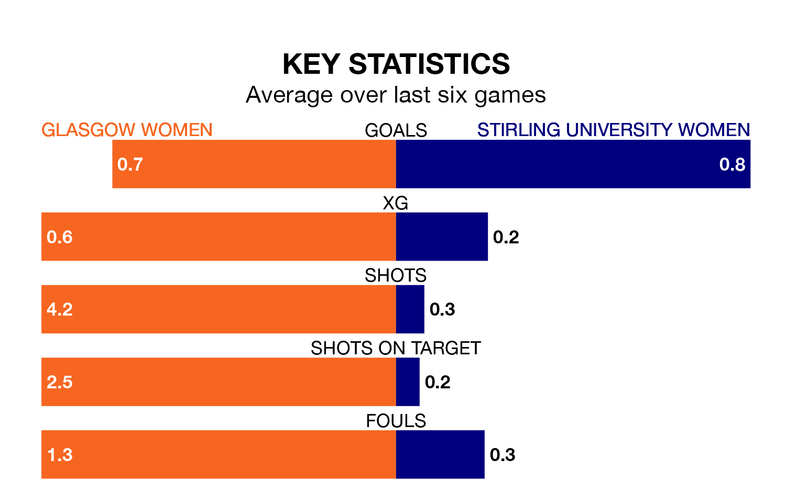

Sunday's match at New Tinto Park sees the league's two bottom sides face each other, as Glasgow Women host rock-bottom Stirling University Women.
Glasgow have picked up 23 points from their first 23 SWPL 2 games, with five wins and eight draws.
That is seven points more than Stirling University have collected, having won four and drawn four.
Glasgow are in bad form in SWPL 2, with one win and a draw from their last six games.
But with a win and five losses over that period, Stirling University's form is even worse – they have taken three points from 18, compared to the home team's four.
In the last 10 years, Glasgow and Stirling University have played each other on 10 occasions. Glasgow won five of them, Stirling University two, and they drew three times.
On average, Glasgow scored 2.5 goals and Stirling University 0.8 in those matches.
Their last meeting was on March 3, when they played out a 1-1 draw.
With 19 goals in 25 games so far this season, the visitors are the league's lowest scorers with 0.8 goals per game. And they are conceding more than average, letting in 86 goals at a rate of 3.4 per game.
Glasgow are also below average scorers, with 0.9 goals per game, compared to a league average of 1.8. They have conceded 1.8 goals per game.
Glasgow's last match was on Wednesday, a 2-1 loss against Livingston Women, with getting the goal for Glasgow.
Stirling University lost 4-0 against Boroughmuir Thistle last time out, also on Wednesday.
Updated: 12:00 (UTC), 02/05/24